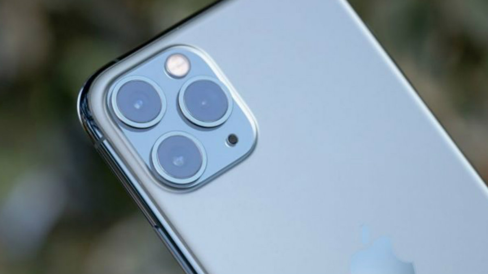
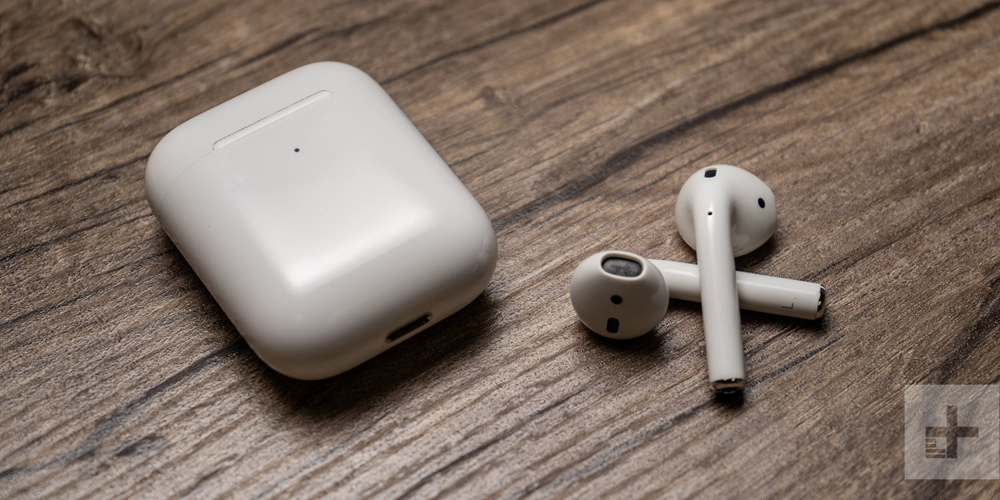

News Paper

Apple iPhone 11 Pro Max smartphone runs on iOS v13.0 operating system. The phone is powered by Hexa Core (2.65 GHz, Dual core, Lightning + 1.8 GHz, Quad core, Thunder) processor. It runs on the Apple A13 Bionic Chipset. It has 4 GB RAM and 64 GB internal storage.
The MacBook Air is a line of laptop computers developed and manufactured by Apple Inc. It consists of a full-size keyboard, a machined aluminum case, and a thin light structure. The Air was originally positioned above the previous MacBook line as a premium ultraportable.[2] Since then, the original MacBook's discontinuation in 2011, and lowered prices on subsequent iterations, have made the Air Apple's entry-level laptop.[3] In the current product line, the MacBook Air is situated below the performance range MacBook Pro.

Apple's second-generation AirPods feature the same design as the original AirPods, but there are a few new internal features including an H1 chip that enables "Hey Siri" functionality, faster device switching, and other functions, along with the new Wireless Charging Case.